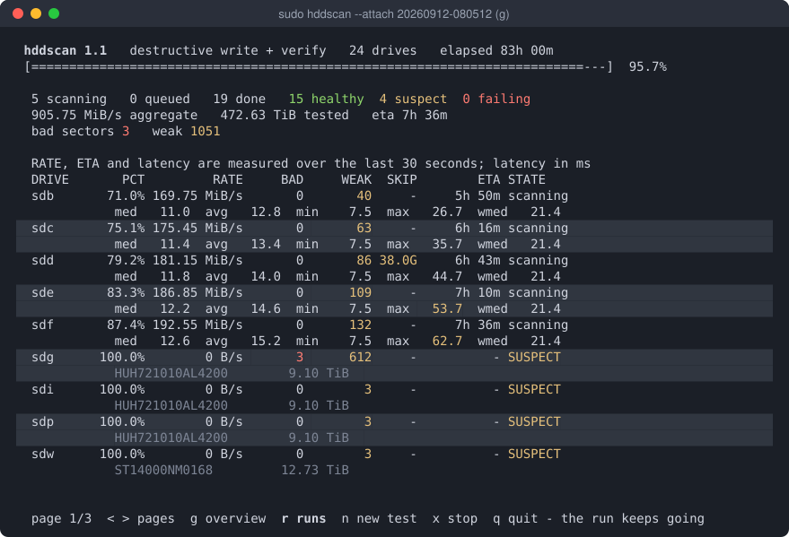
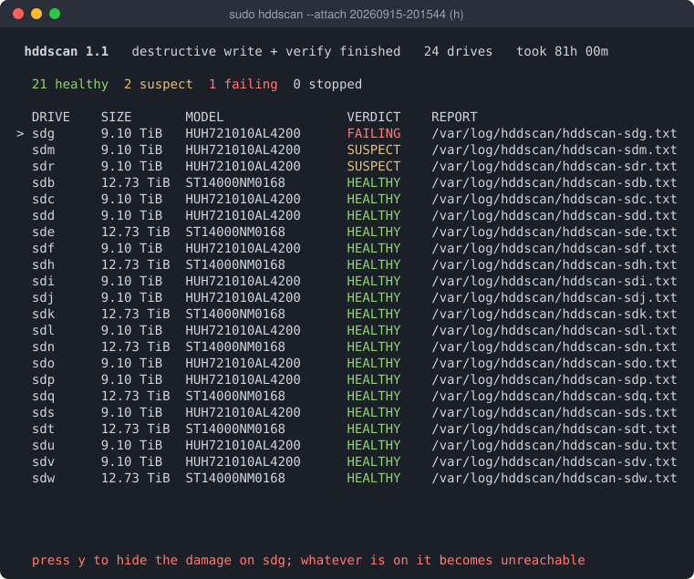

Slow sectors are tomorrow’s bad sectors.
SMART counts sectors that have already failed. hddscan times every read, and finds the ones that are about to.

Quick start
Build it and run it
git clone https://github.com/IntelliStream-DataHub/hddscan
cd hddscan
make # or: make static, for a binary with no glibc floor
sudo ./hddscan # opens the formThe default profile writes, so a bare hddscan /dev/sdb
stops and asks for --confirm instead of doing anything:
an error, never data loss. For a drive with data on it, use
--profile inservice, which never writes.
The problem
“SMART Health Status: OK” until the day it isn’t
A drive can return every sector and still be failing. When a sector gets hard to read, the drive tries again, and again, until it gets the data right. Your read works, but it takes tens of milliseconds instead of a few. The drive logs no error and moves nothing, so SMART keeps saying OK.
Those slow sectors are the ones about to fail. The only way to catch them is to time every read. That is what hddscan does.
- SMART health status
- OK
- Sectors reallocated, ever
- 1
- Uncorrected read errors
- 0
- Reads that needed heavy recovery
- 42,899,520
- Its own long self-test
- failed
One real SAS drive, from its own error log: about 80,000 slow recoveries for every terabyte read, and a failure warning that was years old.
Compared with badblocks
badblocks asks “can it read?” hddscan also asks “how long did it take?”
badblocks is the standard tool, and it is good at what it does: it finds sectors that fail. But a sector that needed 80 ms of retries passes, because badblocks has no time limit on a read. Those are the sectors hddscan is looking for.
| badblocks | hddscan | |
|---|---|---|
| A read that works but is slow | Passes, however long it took. | Flagged as weak. Every read is timed against a budget measured on this drive. |
| A read that fails, or returns the wrong data | Reported as a bad block. | Reported as unreadable or corrupt. |
| Testing a drive with data on it | -n reads each block, writes test patterns over it, then puts the data back. | --mode verify does the same, and --profile inservice never writes at all. |
| Testing a new drive | -w writes four patterns and reads each one back. | predeploy writes a pattern to every sector and reads it back, then sets the drive up for service. |
| Many drives | One drive per run. You start and watch one process for each. | One worker per drive, all in parallel, with one live dashboard. The run keeps going if your terminal closes. |
| What you get | A list of bad block numbers. | A verdict per drive (healthy, suspect or failing) that says how much of the drive was tested, plus the same list in badblocks format. |
They work together. --badblocks-list writes what hddscan
found in the format mke2fs -l reads, so a new filesystem
steps around it. If you only need to know whether a disk has sectors
that fail outright, badblocks is enough.
How it works
Time every read against what this drive should manage
-
Calibrate
Measure the drive at eight points from the outer edge to the inner, with the same access pattern the scan will use. The budget follows the platter, because an outer track reads about twice as fast as an inner one.
-
Scan and drill down
Read the drive in chunks, one request at a time so each is timed alone. A chunk is never faster than its slowest sector, so any chunk over budget is re-read 4 KiB at a time to find the culprit.
-
Judge and report
Every suspect sector is retried and classified: weak (slow, or readable only on a retry), unreadable, or corrupt. The verdict says how much of the drive was actually tested.
What you get
Built for a shelf of drives, not a single disk
It asks what you are about to do
Pick a profile: predeploy writes every sector and verifies it, inservice never writes, survey samples a shelf, decay checks a written pattern weeks later, repair forces the drive to retire what it cannot read.
ProfilesRuns outlive the terminal
A scan belongs to a process of its own. Close the window or lose the ssh session and it keeps going. Thirty formats and twenty-four scans are two rows on one screen.
RunsReports that do not overclaim
Every report has a Coverage line. A scan that was sampled, interrupted or partial says so, and blocks it could not test are named as untested, never passed as healthy.
Reading a reportPut a damaged drive back to work
A few hundred bad sectors do not make a drive scrap. One key maps the damage out below the filesystem with device-mapper, so ZFS, btrfs or ext4 get a clean device. No kernel module.
Hiding bad blocksLeaves drives configured for service
Predeploy saves what a SAS drive should run with: auto-reallocation, the read cache, and its own weekly background scan. Every change is printed with the command that undoes it.
Drive settingsLow level format, in parallel
Change sector size, strip or keep protection information, across a whole shelf at once. On one 14 TB drive, removing it gave back 284 GB.
FormattingOne static binary
Single-file C with no dependencies beyond libc, so it runs on a rescue system with nothing installed. smartctl, sdparm and sg3-utils are used when they are there.
Install
When a drive fails the scan
Decide what it is still good for
The summary a scan ends on holds every verdict until you press a
key. On a drive with damage, h writes a map of the bad
extents onto the drive itself and creates
/dev/mapper/bb-<serial>: the same drive with the
damage cut out, and spares held back for anything found later.
Put a backup pool on that, with compression and checksums, and a drive you were about to throw away keeps working.